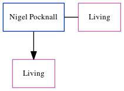

Nigel J Pocknall
[ Home ] | [ Calendar ] | [ Surnames Index ] | [ Census Index ] | [ Family History ]Nigel Pocknall, the husband of Sandra A Goodwin (the first cousin once-removed on the mother's side of Nigel Horne), and married Sandra (with whom he had 1 surviving child, Claire Louise) in Thanet, Kent, England around Nov 19841.
Citations
- England & Wales, Marriage Index: 1916-2005 Online publication - Provo, UT, USA: The Generations Network, Inc., 2009.Original data - General Register Office. England and Wales Civil Registration Indexes. London, England: General Register Office. © Crown copyright. Published by permission of the Cont
Family Tree
Generated by ged2site. Last updated on Jun 11, 2024